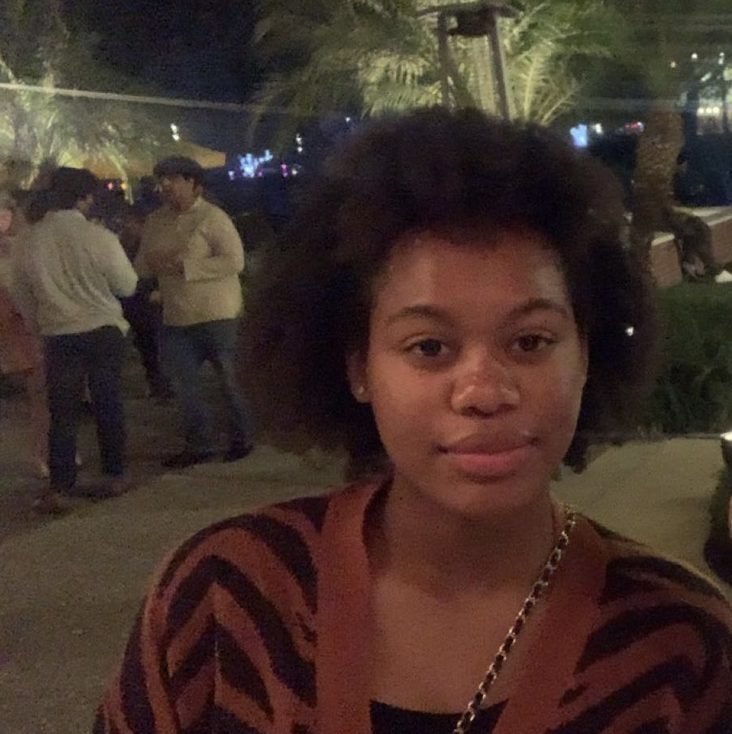

<!--
  Student Name: Raygen Bostick
  File Name:index.html
  Date:03/02/2022
-->
<!DOCTYPE html>
<html lang="en">
  <head>
      <title>Raygen Bostick: Home</title>
      <meta charset="utf-8">
      <link rel="stylesheet" href="css/styles.css">
      <meta name="viewport" content="width=device-width, initial-scale=1.0">
      
</head>
<body>
<body style="background-color:#cc9900;">
</body>
</html>
<style>
  * {
  box-sizing: border-box;
}

.column {
  float: left;
  width: 33.33%;
  padding: 5px;
}

/* Clearfix (clear floats) */
.row::after {
  content: "";
  clear: both;
  display: table;
}
</style>
  </head>
<body>
  <div id="wrapper">
<nav class="mobile-nav"
  <div id="nav-links">
    <a href="index.html">Home</a>
    <a href="heritage.html"><Heritage</a>
    <a href="music.html">Music</a>
    <a href="sports.html">Sports</a>
    <a href="contact.html">Contact</a>
    </div>
    <a class="nav-links" onclick="hamburger()">
<header>
</header>
<nav>
  <ul>
  <li><a href="index.html">Home</a></li>
  <li><a href="heritage.html">Heritage</a></li>
  <li><a href="music.html">Music</a></li>
  <li><a href="sports.html">Sports</a></li>
  <li><a href="contact.html">Contact</a></li>
  <li><a href="linkedin.com/in/raygen-bostick-b56487230">Linkedin</a></li>
  </ul> 
</nav>
<main>
  <div id= "Welcome">
  <figcaption>Raygen Bostick</figcaption>
  <div class="row">
  <div class="column">
     
  </div>
    
  <p>My name is Raygen Bostick. I am from Tampa, Florida. I am a second-year Information and Technology student. I am originally from Largo, Florida. My family settled there from Albany, Georgia, in the early 1900s. With their trade being sharecropping, my family migrated to Floridasearched for the opportunities that the orange groves would provide.</p>
       <p>I grew up in Largo until I moved to Dunedin, Florida when my mom was six years old. While in Dunedin, I attended Curlew Creek Elementary, Palm Harbor Middle, and Palm Harbor University High School. When I was in middle school, I began to play basketball. While in grade school, I experienced many different cultures from interacting with students of Sikh, Albanian, and Indian descent. However, I didn’t have the opportunity to be surrounded by African American culture.</p>
       <p>I initially chose FAMU because I wanted to be surrounded by the many facets of Black culture that I missed out on in my childhood. Upon arriving at FAMU, my major was biology with a premedical focus. During this time, I had a passion for healthcare inequities. However, as I progressed in the curriculum and got more shadow experience, I realized that I didn’t want that in the future. I then discovered the opportunities I could get with an information and technology degree. My goal this semester is to learn as much as I can regarding programming and develop my coding skills.</p>

<h3></h3>
                <audio controls>
  <source src="media/jazz.mp3" type="audio/mp3">
  <source src="media/jazz.ogg" type="audio/ogg">
  <p>Your browser does not support the audio element.</p>
            </audio>
            <audio controls>
  <source src="media/raining.ogg" type="audio/ogg">
  <source src="media/raining.mp3" type="audio/mp3">
  <p>Your browser does not support the audio element.</p>
            </audio>  
</figure>
    
  </div> 
</main>
	<footer>
		<p>&copy; Copyright 2022. All Rights Reserved.</p>
		<p><a href="mailto:raygenbostick24@gmail.com">raygenbostick24@gmail.com</a></p>
     <a href="tel:+7274885653">+727 488 5653</a> 
	</footer>
</body>
</html>
